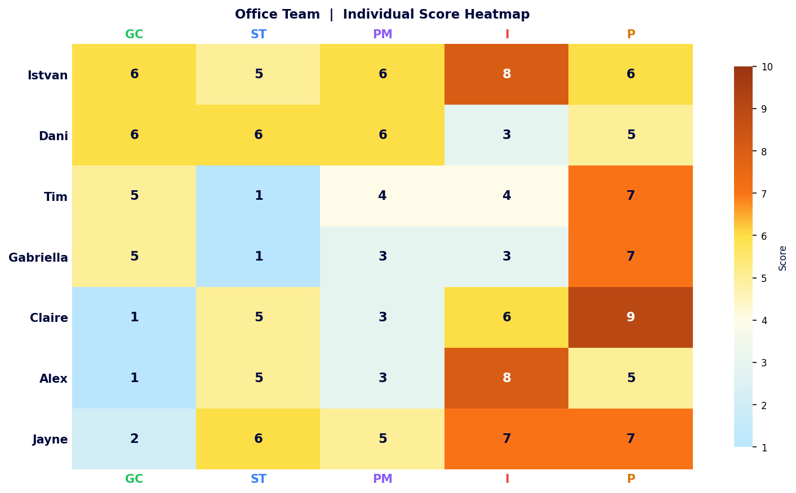
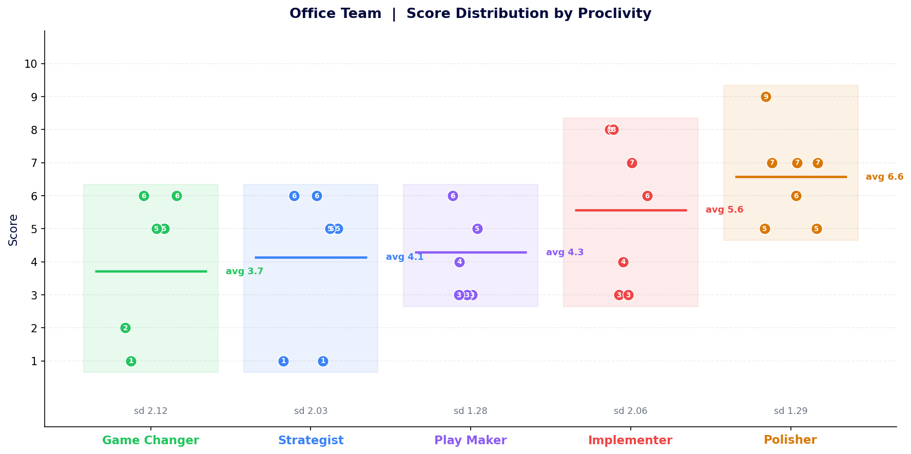
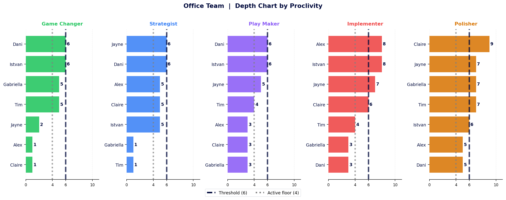
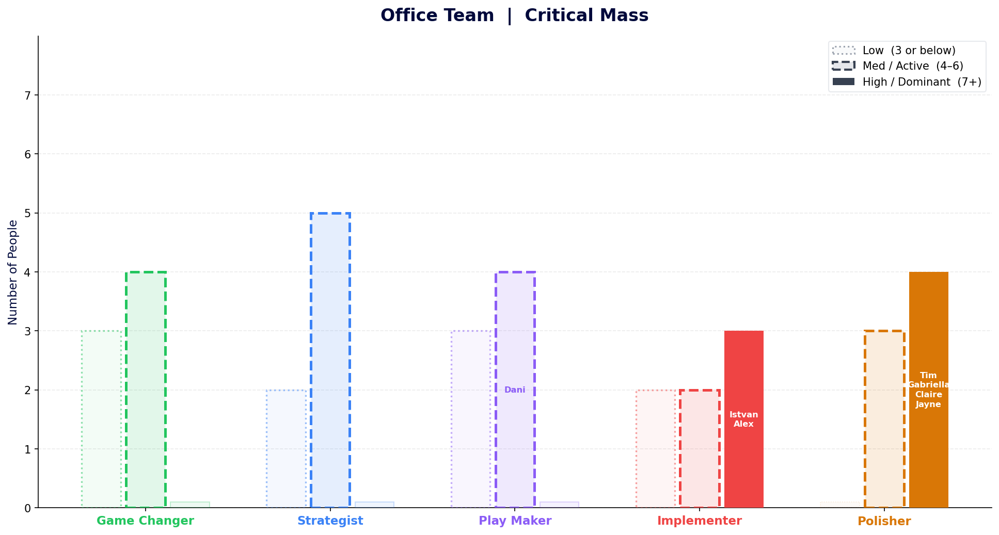

The whole team in one grid
Quality and follow-through are in the DNA of this team. That consistency across seven people is rare and worth owning.

Where the team is aligned and where it is split
Polisher alignment is the team's common language. The Implementer split means two very different experiences of pace and delivery sharing the same workspace.

The standard deviations tell the alignment story. Polisher (sd 1.29) and Play Maker (sd 1.28) are the most consistent: the team broadly agrees on these two, even if not at the same level. Game Changer (sd 2.12), Implementer (sd 2.06) and Strategist (sd 2.03) are the polarised columns.
The Implementer column is the most extreme split: Istvan, Alex and Jayne cluster at 7 and 8 while Dani and Gabriella sit at 3. This is not an “average Implementer team” of 5.6. It is two distinct sub-groups sharing a workspace.
Who owns each energy and how thin the bench gets
Seven people who can all finish something properly. That is the team's most consistent and most valuable capability.

Polisher is the only proclivity where the entire bench clears the Active threshold. If you need someone to finish, refine, or get something across the line properly, you have seven options. If you need disruption or strategic direction, you have one or two people who can hold it with any real energy, and the bench drops off fast.
Where does critical mass sit?
All about the action. But the thinky bit?

Polisher is the only proclivity where the team has genuine Dominant energy: four of seven people sit at 7 or above, with no one below Active. Names appear in each column only where that proclivity is the person’s highest energy: Tim, Gabriella, Claire and Jayne all lead with Polisher, Istvan and Alex lead with Implementer, and Dani leads with Play Maker.
Game Changer and Strategist register zero people at Dominant, and nobody’s highest energy sits there. The team generates and delivers with real conviction. Direction-setting and genuinely new thinking require more deliberate effort.
Four things the flat average hides
- Every person on this team agrees that things should be finished properly. All seven score 5 or above on Polisher, the tightest spread in the dataset (sd 1.29). Whatever else they argue about, that shared instinct is a genuine and rare foundation.
- The team has real delivery firepower in Istvan, Alex and Jayne. All three sit at Implementer 7 or 8 and drive real pace. The implication: Dani and Gabriella, both at 3, experience a very different working tempo. The team average of 5.6 describes nobody. Decisions about delivery rhythm and operational tempo will land differently across this split.
- Tim and Gabriella bring near-identical instincts to different roles. The same five-proclivity shape, including a Strategist floor of 1, means they carry the same strengths into the team and the same blind spots. That alignment can be a resource; it is also a shared gap.
- The team generates and delivers with real conviction. Polisher and Implementer are where energy concentrates. Game Changer and Strategist sit at the low end for most people, with nobody’s highest energy sitting there. On any task that requires a longer arc, new thinking, or anticipating consequences, the answer is people, process or will to make it happen deliberately.
The heat pattern is unambiguous: the right side of the grid runs warm, the left side runs cold. Polisher and Implementer carry the orange and burnt-orange cells; Game Changer is ice blue almost without exception. Claire and Alex show the starkest contrast in the grid: deep cold on GC, deep warmth on Polisher.
Dani’s row is the only one where warmth spreads evenly across the first four columns before dipping on Implementer. Every other row has at least one cold zone on the left. The Strategist column shows the grid’s sharpest contrast: two ice-blue cells (Tim and Gabriella, both at 1) sit alongside five warm Active cells, making it simultaneously the team’s most loaded and most exposed proclivity.